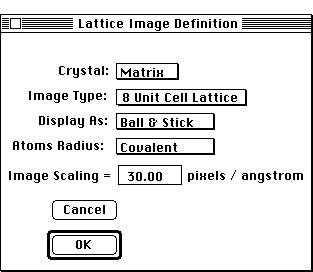

Distributed By: Virtual Labs
Definition Dialog Box
PATH...File Menu::Real Lattice...
PATH...{Real Lattice}:Lattice::re-Define...
The Lattice Image Definition Dialog box is activated when opening the Real
Lattice subsection. It is located under the Lattice Menu by selecting the
Re-define... option. Use it to select:
- The crystal for examination.
- The number of unit cells to view
- The type of display.
- The criteria Desktop Microscopist should use to determine the atom
sizes.
- The scaling factor for the image.

Lattice Image Definition Dialog Box
This pop-up menu is used to select the crystal to be
plotted. Desktop Microscopist supports one crystal at a time for real lattice
plotting. Desktop Microscopist will display a unit cell which is comprised
of the atoms which are less than a lattice translation vector from the origin.
Desktop Microscopist will also display a unit lattice. A unit lattice corresponds
to the typical lattice display with additional atoms plotted if they are
less than or equal to a lattice translation vector from the origin. It will
also plot a 2x2x2 (8 unit cell), a 4x4x4 (64 unit cell) display, or a crystal
with a shape defined by the Crystal Shape Dialog Box..i.Real Lattice:Setup
Dialog:Crystal Selection;
Desktop Microscopist has the capability to display the atoms either as a
ball & stick (atomic radii are divided by 2) or in hard ball mode (atomic
radii are as given in the Desktop Microscopist Database on Atomic information).
Desktop Microscopist also allows the user to select which radius will be
used for display of neutral atoms. These choices are covalent, metallic
and van der Waals. If there is no corresponding entry for a given element,
Desktop Microscopist will default to the covalent value. If a van der Waal
radius is selected and there is no value for that particular atom, then
the covalent value is selected. If the atom has been defined as an ion,
the ionic value is always given. If there is no value available for the
particular ionic state, Desktop Microscopist will default to the covalent
value. Use the Atomic Info Dialog box to view the stored radii for a given
atom. Finally, Desktop Microscopist does allow specific scaling for lattice
plots. .i.Real Lattice:Setup Dialog:Display
Type Real Lattice:Setup Dialog:Atomic Radii;
Note: The default real lattice plot will look very flat on a color monitor.
This is because it has not been rendered. To view a rendered plot it is
necessary to select the Render Plot option under the Lattice Menu.
Author: J.ames T.
Stanley
 Desktop
Manual:Dialog Boxes
Desktop
Manual:Dialog Boxes
Distributed By: Virtual Labs
Last Updated:1/12/96 Sat, Apr 27, 1996